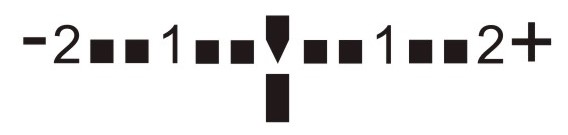

Dicas Para Melhorar Suas Fotos
ENQUADRAMENTO
A ideia do enquadramento é o foco principal para uma boa fotografia, é aqui que se deve dar prioridade ao elemento principal da sua foto. Como por exemplo, em fotos de pessoas, sempre vamos manter o foco na pessoa, podendo ficar a critério se o fundo vai ser desfocado ou não. Já em composições de paisagens com muitos elementos, olhe sempre para todos os detalhes presentes e mantenha apenas o essencial para sua composição.
UTILIZAR O MODO MANUAL
O modo manual é o principal responsável para tirar uma foto de boa qualidade, já que você pode controlar diversas etapas da captura sem se render ao automático. Assim você consegue ter um maior controle nos ajustes da sua foto, entre eles os principais e como configurar são:
FOCO
Para escolher o melhor foco, você pode ou ajustá-lo manualmente, com uma barra deslizável(a qual para objetos de perto desfocará o fundo, e para fotos de objetos longes, desfoca os mais pertos), ou utilizar configurações pré-definidas, como o modo macro, que permite a captura de objetos bem de perto enquanto mantém o fundo desfocado e, é um dos melhores pois captura os objetos próximos com os mínimos detalhes.
ISO
O ISO determina a sensibilidade do sensor da câmera à luz. Quanto maior a sensibilidade, maior será a capacidade da câmera de captar luminosidade. Porém, note que ao usar um ISO alto você terá mais ruído na sua imagem. Se quiser uma imagem completamente nítida, você precisará usar um ISO baixo e compensar no obturador e no diafragma para conseguir a exposição correta. Já em fotos noturnas, especialmente de estrelas, lua, etc, quanto menor a ISO melhor sera a captação de astros.
EXPOSIÇÃO
A exposição permite que você escolha a quantidade de luz que o seu celular irá capturar. Aumentar a exposição lhe dá imagens mais claras, e vice-versa. Em cameras profissionais, a exposição pode ser regulada utilizando o fotômetro, uma régua que fica logo abaixo da imagem no visor ocular, como na figura abaixo:
Quando o indicador está no centro, significa que a imagem está exposta corretamente, se está à esquerda é porque está escura, e se está à direita é porque está muito clara. Normalmente essa calibragem é manual.
OBTURADOR
Também conhecido como cortina, o obturador é onde você define o tempo que a foto levará para ser captada. Quanto maior o tempo de abertura dessa cortina, mais luz entrará e a sua imagem se tornará mais clara. Todavia, ao trabalhar com velocidades mais lentas é provável que sua imagem saia tremida devido à instabilidade das mãos ou o movimento do objeto a ser fotografado.
EVITE O ZOON
A menos que o sua câmera possua lentes específicas ou recursos que potencializem o zoom, é melhor deixá-lo de lado caso a sua preocupação seja com a qualidade, em especial com os celulares, pois na maioria a aproximação é digital, o que pode tornar a foto granulada, borrada ou, em alguns casos, fazê-la perder a definição por completo. Sendo assim, o melhor é não ter medo de se aproximar do objeto a ser fotografado.
CUIDADO COM O FLASH
O flash é uma ótima ferramenta para a fotografia, mas para quem não sabe usá-lo corretamente, ele pode atrapalhar mais que ajudar. Porém, se você optar por utilizá-lo, uma dica é pesquisar qual o seu alcance, que é informado no manual de instrução da câmera. Uma vez sabendo qual a distância máxima que ele alcança, não fique longe, fora da área de alcance), nem muito perto, para não estourar a imagem. Outra forma de usar o flash é durante o dia, quando há contra luz no objeto ou pessoa fotografada.